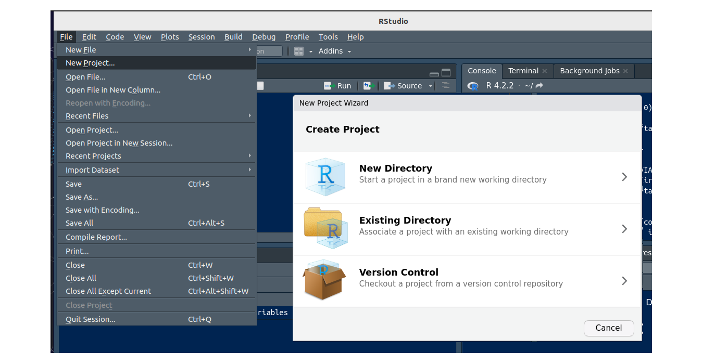

Un análisis reúne datos, código, gráficos e informes. Si esos archivos quedan repartidos en varias carpetas, es fácil perderlos o que el código deje de funcionar al cambiar de computador. Un proyecto de RStudio agrupa todos los archivos de un trabajo en una sola carpeta, con su propio directorio de trabajo, historial y documentos abiertos.
Se ingresa por File > New Project y se elige una de tres opciones:

Ventana para crear un proyecto en RStudio
Al crearlo, RStudio agrega estos archivos a la carpeta:
| Archivo | Para qué sirve |
|---|---|
.Rproj |
Guarda las opciones del proyecto y sirve de acceso directo para abrirlo |
.Rproj.user |
Carpeta oculta con archivos temporales, como autoguardados y el estado de las ventanas |
.Rhistory |
Historial de comandos |
.RData |
Objetos guardados de la sesión, si las opciones lo indican |
Según la documentación de Posit, al abrir un proyecto se inicia una sesión nueva de R, el directorio de trabajo pasa a ser la carpeta del proyecto y se restauran los documentos abiertos.
Una forma directa de abrirlo es hacer doble clic en el archivo
.Rproj. También se puede usar File > Open
Project. Para trabajar en dos proyectos a la vez, cada uno se
abre en su propia ventana con File > Open Project in New
Session.
Cree el proyecto con File > New Project > New
Directory > New Project y llámelo
Actividad1.
Cree un script con File > New File > R
Script y guárdelo como 01-lectura.R. Quedará
dentro de la carpeta del proyecto.
En la carpeta del proyecto, cree el archivo de texto
datos.txt con este contenido:
variable1
3
4
5
6
7En el script escriba la siguiente instrucción y ejecútela con Ctrl + Enter (Cmd + Enter en macOS):
read.table("datos.txt", header = TRUE)Compruebe el contenido del proyecto con dir(). Debe
mostrar 01-lectura.R, Actividad1.Rproj y
datos.txt.
Cierre RStudio, mueva la carpeta
Actividad1 a otro lugar y abra
Actividad1.Rproj con doble clic. El código sigue
funcionando sin cambios, porque la ruta es relativa a la carpeta del
proyecto.
No existe una única estructura correcta, pero separar los archivos por función ayuda mucho. Esta es una organización sencilla:
proyecto_ventas/
├── proyecto_ventas.Rproj
├── README.txt descripción del proyecto
├── informe.Rmd documento final
├── data/ datos originales, no se modifican a mano
│ └── ventas.csv
├── R/ scripts
│ └── 01-resumen.R
└── output/ tablas y gráficos generadosDescargar este proyecto de ejemplo (los datos son ficticios).
R para Ciencia de Datos recomienda nombres descriptivos, sin espacios ni caracteres especiales. Si los scripts se ejecutan en un orden, conviene iniciar el nombre con un número.
| Evitar | Preferir |
|---|---|
Untitled1.R |
01-limpieza.R |
codigo final (2).R |
02-modelo.R |
Copia de datos nuevos.xlsx |
ventas_2026.xlsx |
El directorio de trabajo es la carpeta donde
R busca y guarda archivos. Se consulta con
getwd(), y en un proyecto es la carpeta del proyecto.
Una ruta indica dónde está un archivo:
| Tipo | Ejemplo | ¿Funciona en otro computador? |
|---|---|---|
| Absoluta | "C:/Users/Ana/Documentos/curso/data/ventas.csv" |
No |
| Relativa | "data/ventas.csv" |
Sí, dentro del proyecto |
Por eso se recomienda usar rutas
relativas y evitar setwd(): una ruta propia de un
computador casi nunca funciona en otro.
ventas <- read.csv("data/ventas.csv")
head(ventas, 3)
tienda mes ventas
1 Cali 1 120
2 Cali 2 135
3 Cali 3 128La función file.path() construye rutas con la barra
correcta:
file.path("data", "ventas.csv")
[1] "data/ventas.csv"Windows muestra las rutas con \, pero en
R esa barra tiene otro significado. Se debe escribir
/, que funciona en todos los sistemas.
ruta <- "C:\Users\Ana\ventas.csv"
Error: '\U' used without hex digits in character string (<text>:1:13)¿Qué problema resuelve? Una ruta relativa depende de
la carpeta desde donde se ejecuta el archivo. En el proyecto de ejemplo,
"data/ventas.csv" funciona si informe.Rmd está
en la carpeta principal. Pero si ese informe se mueve a una subcarpeta
llamada informes, R busca
informes/data/ventas.csv, que no existe, y aparece un
error.
¿Qué hace? La función here() ubica
primero la carpeta principal del proyecto, identificada por el archivo
.Rproj, y arma la ruta desde allí. Por eso la misma
instrucción sirve desde cualquier subcarpeta y en cualquier
computador.
| Ubicación del archivo que lee los datos | Ruta normal | Con here() |
|---|---|---|
| Carpeta principal | "data/ventas.csv" |
here("data", "ventas.csv") |
Subcarpeta informes |
"../data/ventas.csv" |
here("data", "ventas.csv") |
¿Cómo se usa? Se instala una sola vez, se carga con
library() y se escribe cada carpeta y el archivo como
textos separados por comas:
install.packages("here") # solo la primera vez
library(here)
ventas <- read.csv(here("data", "ventas.csv"))En el computador de Ana, here("data", "ventas.csv")
podría devolver
C:/Users/Ana/proyecto_ventas/data/ventas.csv. En otro
computador devolverá la ruta que corresponda, sin cambiar el código.
¿Cuándo usarlo? Cuando los archivos
.Rmd o los scripts estén en distintas subcarpetas. Si todo
se ejecuta desde la carpeta principal, las rutas relativas son
suficientes y here no es necesario.
El análisis debe quedar en el código, no en la memoria de la sesión. Si un objeto solo existe en el ambiente, se perderá al cerrar R o será imposible saber cómo se creó. Para evitarlo se recomienda:
Empezar cada sesión vacía. En Tools > Global Options > General, desmarcar Restore .RData into workspace at startup y elegir Never en Save workspace to .RData on exit. Así, R no recupera objetos de sesiones anteriores.
Comprobar que el script funciona solo. Reiniciar R con Ctrl + Shift + F10 (Cmd + Shift + F10 en macOS) y ejecutar todo el script con Ctrl + Shift + S (Cmd + Shift + S en macOS). Si algo falla, al script le falta una instrucción. Esta práctica la recomienda R para Ciencia de Datos.
Cargar los paquetes al inicio del script. Quien
lo reciba verá de inmediato qué necesita. La instrucción
install.packages() se ejecuta en la consola y no se deja en
el código que se comparte, porque instalaría programas en el computador
de otra persona.
Según Jenny Bryan (2017):
setwd("C:/...") hace que el código dependa de un
computador.rm(list = ls()) no deja una sesión limpia: borra los
objetos, pero los paquetes cargados y las opciones siguen activos. Lo
correcto es reiniciar R.Al generar un documento, las rutas de un .Rmd se
calculan desde la carpeta donde está ese archivo. Si
informe.Rmd está en la carpeta principal,
"data/ventas.csv" funciona. Si se mueve a una subcarpeta,
esa ruta falla y hay que usar "../data/ventas.csv" o
here(). La página RMarkdown
explica cómo crear estos documentos.
¿Qué problema resuelve? Un proyecto separa los archivos, pero no separa los paquetes: por defecto, todos los proyectos usan los mismos paquetes instalados en el computador. Si dentro de un año se actualiza un paquete, un análisis de hoy podría dar otro resultado o dejar de funcionar. Lo mismo puede ocurrir si otra persona lo ejecuta con versiones distintas.
¿Qué hace? El paquete renv
le da a cada proyecto su propia colección de paquetes y anota sus
versiones en un archivo llamado renv.lock. Con esa lista,
otra persona puede instalar exactamente las mismas versiones.
¿Cómo se usa?
| Instrucción | Cuándo se ejecuta | Qué hace |
|---|---|---|
renv::init() |
Una vez, al empezar | Activa renv en el proyecto y crea
renv.lock |
renv::snapshot() |
Después de instalar o actualizar paquetes | Guarda las versiones actuales en
renv.lock |
renv::restore() |
Al abrir el proyecto en otro computador | Instala las versiones anotadas en
renv.lock |
install.packages("renv") # solo la primera vez
renv::init()¿Cuándo usarlo? En trabajos largos, compartidos o que deban repetirse en el futuro, como una tesis. No es necesario en esta unidad.
Git guarda el historial de cambios de un proyecto, y GitHub permite compartirlo. La opción Version Control crea un proyecto a partir de un repositorio. Es útil para colaborar y para recuperar versiones anteriores, pero no se requiere en esta unidad. El libro Happy Git and GitHub for the useR es una buena guía para empezar.
Todas las actividades evaluativas de esta asignatura deben
desarrollarse con R y RStudio, y
presentarse en formato HTML generado con
RMarkdown. Para cada actividad se debe crear un
proyecto y enviar un archivo comprimido (.zip) que
contenga:
.Rproj)..Rmd.Antes de entregar, compruebe lo siguiente:
.Rproj.setwd().| Problema | Causa | Solución |
|---|---|---|
cannot open file 'data/ventas.csv' |
R no está en el proyecto o el archivo tiene otro nombre o ubicación | Abrir el .Rproj y revisar con
getwd() y dir() |
| El código funciona solo en mi computador | Hay rutas absolutas | Usar rutas relativas |
object not found después de reiniciar |
El objeto no se crea en el código | Agregar al script la línea que lo crea |
could not find function después de
reiniciar |
Falta library() |
Cargar el paquete al inicio del script |
'\U' used without hex digits |
La ruta usa \ |
Cambiar por / |
| El compañero no puede abrir mis datos | El .zip no incluye la carpeta de
datos |
Comprimir toda la carpeta del proyecto |
Para estos retos,
descargue el proyecto de
ejemplo, descomprímalo y abra
proyecto_ventas.Rproj.
Indique cuáles de estas líneas funcionarán en el computador de un compañero que recibe el proyecto completo:
a <- read.csv("C:/Users/Ana/Escritorio/ventas.csv")
b <- read.csv("data/ventas.csv")
c <- read.csv("data\ventas.csv")
d <- read.csv(file.path("data", "ventas.csv"))
setwd("C:/Users/Ana/Escritorio"); e <- read.csv("ventas.csv")a: no, porque es una ruta absoluta.b: sí, es una ruta relativa al proyecto.c: no. R interpreta \v
como un carácter especial, así que no encuentra el archivo.d: sí, también es una ruta relativa.e: no, porque setwd() depende de una
carpeta de otro computador.Cree el script R/02-promedios.R. Debe leer los datos,
calcular las ventas promedio por tienda, ordenarlas de mayor a menor y
guardar el resultado en output/promedio_por_tienda.csv.
ventas <- read.csv("data/ventas.csv")
promedio <- aggregate(ventas ~ tienda, data = ventas, FUN = mean)
promedio <- promedio[order(promedio$ventas, decreasing = TRUE), ]
promedio
tienda ventas
1 Cali 133.25
3 Pasto 91.25
2 Neiva 70.50Para guardar el resultado:
write.csv(promedio, "output/promedio_por_tienda.csv", row.names = FALSE)Cree la carpeta informes, mueva allí
informe.Rmd y haga clic en Knit. ¿Qué
error aparece, por qué ocurre y cuáles son dos formas de corregirlo?
Aparece cannot open the connection. Al generar el
documento, las rutas se calculan desde la carpeta del .Rmd,
y dentro de informes no existe
data/ventas.csv.
Se puede subir un nivel con .., o construir la ruta
desde la raíz con here:
ventas <- read.csv("../data/ventas.csv")
ventas <- read.csv(here::here("data", "ventas.csv"))Un estudiante ejecutó en la consola
ventas <- read.csv("data/ventas.csv") y
library(dplyr), y luego guardó solo este script. Explique
por qué funciona ahora, por qué fallará al reiniciar R
y cómo corregirlo.
ventas |>
group_by(tienda) |>
summarise(total = sum(ventas))Funciona porque el objeto y el paquete siguen activos en la sesión. Al reiniciar R, ninguno de los dos existe. El script debe incluir todo lo que necesita:
library(dplyr)
ventas <- read.csv("data/ventas.csv")
ventas |>
group_by(tienda) |>
summarise(total = sum(ventas))Proponga una organización y mejores nombres para estos archivos:
Untitled1.R, grafico final.png,
datos (1).xlsx, informe entrega.Rmd y
limpieza nueva.R.
Una posible organización es la siguiente:
proyecto/
├── proyecto.Rproj
├── informe_entrega.Rmd
├── data/
│ └── datos_originales.xlsx
├── R/
│ ├── 01-limpieza.R
│ └── 02-analisis.R
└── output/
└── grafico_final.pngEl nombre de Untitled1.R depende de lo que haga el
script. Primero hay que abrirlo y revisar su contenido.
Última revisión: 4 de noviembre de 2026.